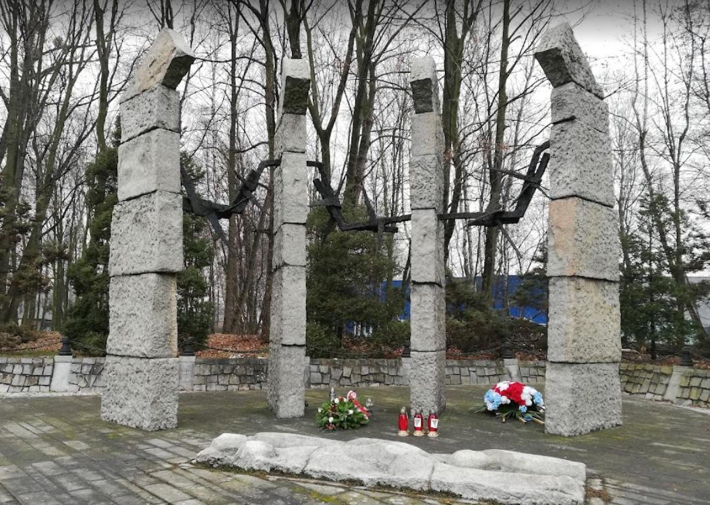
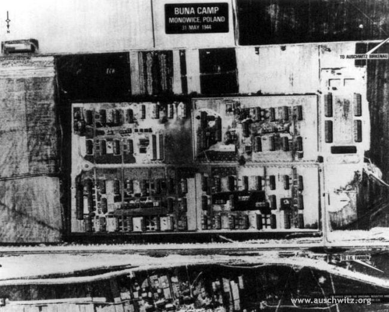

A few months after the liberation of the Buna/Monowitz concentration camp by the Red Army on January 27, 1945, the camp was closed, and in its place the village of Monowice, previously torn down, was rebuilt by the returning Polish inhabitants. At the site of the concentration camp remain only isolated traces of what shaped its image for three years. The local residents raised funds to erect a white stone cross and a plaque to commemorate those who were murdered in the camp. It has this inscription in Polish:
"In memory of those who were murdered in the years 1941–1945 in Subcamp IV. The residents of Monowice."
At the edge of the grounds of the factory, which was continued as a Polish state-owned enterprise, the town of Oświęcim put up a monument to those murdered during the construction. It consists of four ultralarge stone columns, whose shape is reminiscent of the fence pillars of the concentration camps. Between them stretches a huge piece of barbed wire. In front of them, memorial plaques are set into the ground, with these words in a variety of languages.
Source:www.wollheim-memorial.de
The camp in Monowice (Auschwitz III Monowitz-Buna) was one of the first and also the largest of the Auschwitz sub camps. Finally it became the central for all 30 “industrial” sub camps where prisoners were employed as slaves.
It housed around 12,000 prisoners, mostly Jews, and prisoners of war who generally got easier jobs. These prisoners worked at the IG Farben synthetic rubber factory, which collaborated with the SS. The factory was fully build and operated by the prisoners housed in the concentration camp, who received the strict dose of food, shelter and construction tools. Within a few months of being established, death of prisoners from starvation or exhaustion was commonplace, with a constant stream of new workers.
Monowitz was the only Auschwitz camp to be bombed by the Allies. Since then the Buna factory presented a military objective. Due to these bombardments in 1944, the construction of Buna was not completed and not one gram of rubber was ever produced. Eventually Monowitz became the largest forced labor camp in Auschwitz.
Source: Auschwitz-Birkenau Memorial & Museum & www.routeyou.com